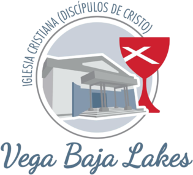
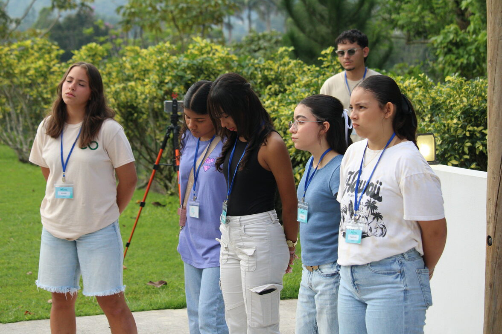

Elevate Youth
Jóvenes que crecen en fe y amistad.
Instagram →
ICDCVega Baja Lakes
Connect
Encuentra ministerios, eventos y un próximo paso concreto.
Ministerios
Jóvenes que crecen en fe y amistad.
Instagram →Niños guiados con cuidado y alegría.
Apoyo, oración y crecimiento espiritual.
Comunidad para fortalecer familias.
Adoración y expresión creativa.
Acompañamiento pastoral y oportunidades para servir.
Calendario
Adoración, Palabra y bienvenida.
Noche de comunidad y crecimiento.
Conecta por Instagram para actividades.
Pregunta por el próximo encuentro.
Visita primero el domingo; allí te orientamos.
Plan Your Visit